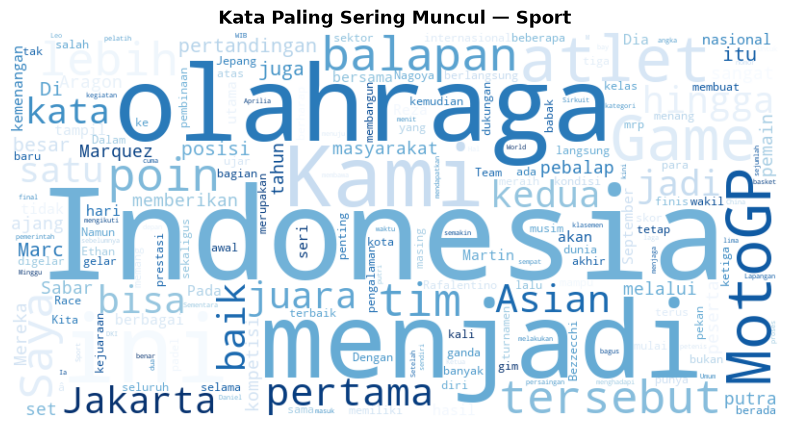
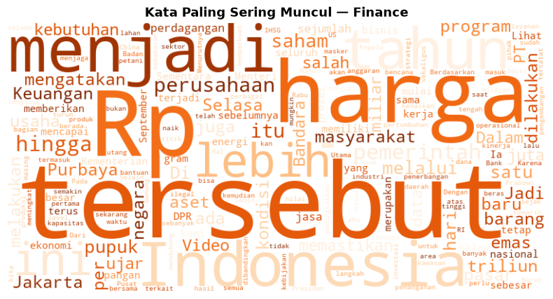
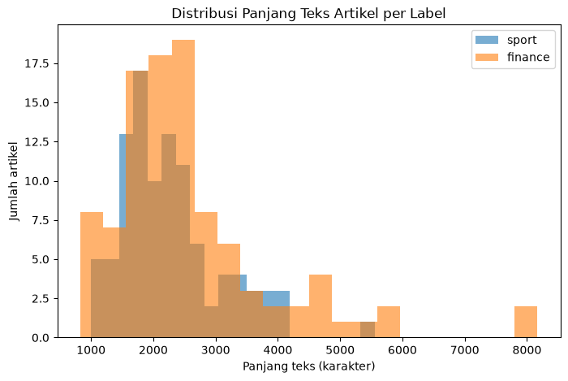
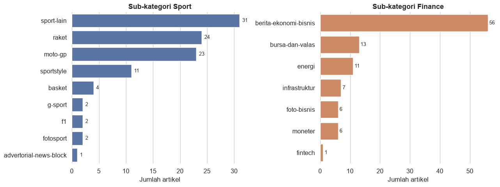
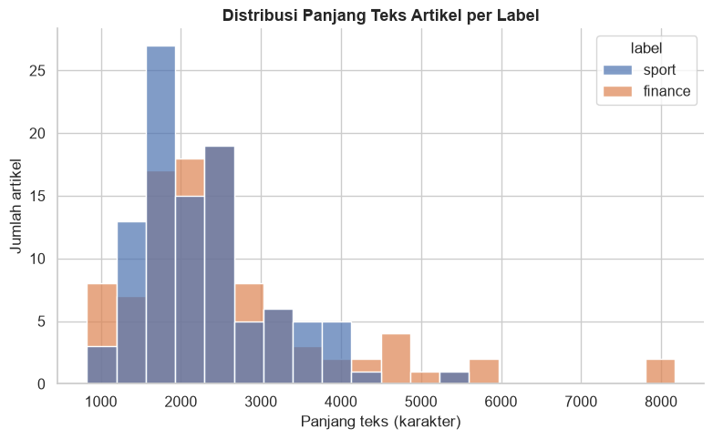

Data Understanding#
Pada tahap ini dilakukan eksplorasi terhadap 200 artikel berita Indonesia yang telah dikumpulkan dari detik.com (100 sport, id 1-100; 100 finance, id 101-200), untuk memahami karakteristik data sebelum masuk ke tahap Data Preparation dan Modeling.
Aktivitas utama:
Collect Data — memuat dataset hasil crawling
Describe Data — ringkasan struktur, tipe data, dan statistik dasar
Explore Data — analisis pola, distribusi, dan visualisasi
Verify Data Quality — pengecekan outlier dan kualitas data secara keseluruhan
1. Collect Data#
Dataset dimuat dari hasil crawling yang telah disimpan (lihat proses lengkapnya di halaman Data Preparation).
import pandas as pd
df = pd.read_excel("../data/dataset_berita_200.xlsx")
print("Ukuran dataset:", df.shape)
df.head()
Ukuran dataset: (200, 4)
| id | isi_berita | label | url | |
|---|---|---|---|---|
| 0 | 1 | Chef de Mission (CdM) Indonesia Todotua Pasari... | sport | https://sport.detik.com/sport-lain/d-8655308/c... |
| 1 | 2 | Banjir besar melanda Nagoya, Jepang, menjelang... | sport | https://sport.detik.com/sport-lain/d-8655303/a... |
| 2 | 3 | Ketua Umum Komite Olimpiade Indonesia (KOI) Ra... | sport | https://sport.detik.com/sport-lain/d-8655067/k... |
| 3 | 4 | Persaingan titel juara dunia semakin ketat men... | sport | https://sport.detik.com/moto-gp/d-8654776/moto... |
| 4 | 5 | Sektor ganda campuran kembali mengalami peromb... | sport | https://sport.detik.com/raket/d-8654666/ganda-... |
2. Describe Data#
print("Info dataset:")
df.info()
print("\nDistribusi label:")
print(df["label"].value_counts())
print("\nCek nilai kosong:")
print(df.isnull().sum())
print("\nCek duplikat isi_berita:")
print(df["isi_berita"].duplicated().sum())
Info dataset:
<class 'pandas.DataFrame'>
RangeIndex: 200 entries, 0 to 199
Data columns (total 4 columns):
# Column Non-Null Count Dtype
--- ------ -------------- -----
0 id 200 non-null int64
1 isi_berita 200 non-null str
2 label 200 non-null str
3 url 200 non-null str
dtypes: int64(1), str(3)
memory usage: 6.4 KB
Distribusi label:
label
sport 100
finance 100
Name: count, dtype: int64
Cek nilai kosong:
id 0
isi_berita 0
label 0
url 0
dtype: int64
Cek duplikat isi_berita:
0
3. Explore Data#
df["panjang_teks"] = df["isi_berita"].apply(len)
print("Statistik panjang teks (karakter):")
print(df.groupby("label")["panjang_teks"].describe())
Statistik panjang teks (karakter):
count mean std min 25% 50% 75% max
label
finance 100.0 2596.74 1327.979308 826.0 1874.5 2291.0 2863.75 8169.0
sport 100.0 2274.33 812.942343 996.0 1704.0 2131.5 2630.50 5554.0
Word Cloud per Kategori#
Visualisasi kata-kata yang paling sering muncul di tiap kategori. Stopword (kata sambung seperti “yang”, “dan”, “dari”) dihilangkan khusus untuk visualisasi ini agar kata bermakna lebih terlihat jelas - ini bukan bagian dari pipeline preprocessing/klasifikasi yang akan dikerjakan pada tahap Modeling.
import matplotlib.pyplot as plt
from wordcloud import WordCloud
from Sastrawi.StopWordRemover.StopWordRemoverFactory import StopWordRemoverFactory
stopword_remover = StopWordRemoverFactory().create_stop_word_remover()
text_sport = stopword_remover.remove(" ".join(df[df["label"] == "sport"]["isi_berita"]))
wc_sport = WordCloud(width=800, height=400, background_color="white",
colormap="Blues", collocations=False).generate(text_sport)
plt.figure(figsize=(10, 5))
plt.imshow(wc_sport, interpolation="bilinear")
plt.axis("off")
plt.title("Kata Paling Sering Muncul - Sport", fontsize=13, fontweight="bold")
plt.show()

text_finance = stopword_remover.remove(" ".join(df[df["label"] == "finance"]["isi_berita"]))
wc_finance = WordCloud(width=800, height=400, background_color="white",
colormap="Oranges", collocations=False).generate(text_finance)
plt.figure(figsize=(10, 5))
plt.imshow(wc_finance, interpolation="bilinear")
plt.axis("off")
plt.title("Kata Paling Sering Muncul - Finance", fontsize=13, fontweight="bold")
plt.show()

4. Verify Data Quality#
Analisis Outlier (Panjang Teks)#
Menggunakan metode IQR (Interquartile Range) untuk mengidentifikasi artikel dengan panjang teks yang jauh berbeda dari mayoritas data — bisa jadi indikasi artikel yang terlalu pendek (ekstraksi gagal sebagian) atau terlalu panjang (artikel liputan khusus/mendalam).
import matplotlib.pyplot as plt
fig, ax = plt.subplots(figsize=(8, 5))
df[df["label"] == "sport"]["panjang_teks"].plot(kind="hist", alpha=0.6, bins=20, label="sport", ax=ax)
df[df["label"] == "finance"]["panjang_teks"].plot(kind="hist", alpha=0.6, bins=20, label="finance", ax=ax)
ax.set_xlabel("Panjang teks (karakter)")
ax.set_ylabel("Jumlah artikel")
ax.set_title("Distribusi Panjang Teks Artikel per Label")
ax.legend()
plt.show()

def cek_outlier(data, label):
q1 = data["panjang_teks"].quantile(0.25)
q3 = data["panjang_teks"].quantile(0.75)
iqr = q3 - q1
batas_bawah = q1 - 1.5 * iqr
batas_atas = q3 + 1.5 * iqr
outlier = data[(data["panjang_teks"] < batas_bawah) | (data["panjang_teks"] > batas_atas)]
print(f"[{label}] Batas normal: {batas_bawah:.0f} - {batas_atas:.0f} karakter")
print(f"[{label}] Jumlah outlier: {len(outlier)} dari {len(data)} artikel\n")
return outlier
outlier_sport = cek_outlier(df[df["label"] == "sport"], "sport")
outlier_finance = cek_outlier(df[df["label"] == "finance"], "finance")
[sport] Batas normal: 314 - 4020 karakter
[sport] Jumlah outlier: 4 dari 100 artikel
[finance] Batas normal: 391 - 4348 karakter
[finance] Jumlah outlier: 12 dari 100 artikel
semua_outlier = pd.concat([outlier_sport, outlier_finance])
if len(semua_outlier) > 0:
print("Detail artikel outlier:")
semua_outlier[["id", "label", "panjang_teks"]]
else:
print("Tidak ditemukan outlier ekstrem pada dataset.")
Detail artikel outlier:
Distribusi Sub-Kategori#
import seaborn as sns
sns.set_theme(style="whitegrid", font_scale=1.05)
fig, axes = plt.subplots(1, 2, figsize=(13, 5))
for ax, kategori, warna in zip(axes, ["sport", "finance"], ["#4C72B0", "#DD8452"]):
data = df[df["label"] == kategori]["sub_kategori"].value_counts()
sns.barplot(x=data.values, y=data.index, ax=ax, color=warna)
ax.set_title(f"Sub-kategori {kategori.capitalize()}", fontsize=13, fontweight="bold")
ax.set_xlabel("Jumlah artikel")
ax.set_ylabel("")
for i, v in enumerate(data.values):
ax.text(v + 0.5, i, str(v), va="center", fontsize=9)
sns.despine(ax=ax, left=True, bottom=True)
plt.tight_layout()
plt.show()

fig, ax = plt.subplots(figsize=(8, 5))
sns.histplot(data=df, x="panjang_teks", hue="label",
palette={"sport": "#4C72B0", "finance": "#DD8452"},
bins=20, alpha=0.7, ax=ax)
ax.set_title("Distribusi Panjang Teks Artikel per Label", fontsize=13, fontweight="bold")
ax.set_xlabel("Panjang teks (karakter)")
ax.set_ylabel("Jumlah artikel")
sns.despine(ax=ax)
plt.tight_layout()
plt.show()

Contoh Artikel#
contoh_sport = df[df["label"]=="sport"].sample(1, random_state=1).iloc[0]
contoh_finance = df[df["label"]=="finance"].sample(1, random_state=1).iloc[0]
print("=== CONTOH ARTIKEL SPORT ===")
print(contoh_sport["isi_berita"][:400], "...\n")
print("=== CONTOH ARTIKEL FINANCE ===")
print(contoh_finance["isi_berita"][:400], "...")
=== CONTOH ARTIKEL SPORT ===
Bilal Hasan memulai debut di UFC dengan meyakinkan, menang KO. Legenda UFC, Henry Cejudo dibikin kagum olehnya.
UFC Fight Night: Nurmagomedov vs Song dalam UFC Shanghai digelar di Oriental Sports Center, Sabtu (29/8). Bilal Hasan yang jalani laga debut, hadapi petarung asal Peru, Nilson Rojas di kelas flyweight.
Kedua petarung punya rekor sama 9-0. Bilal menang di ronde kedua setelah pukulan lurus ...
=== CONTOH ARTIKEL FINANCE ===
Seluruh bandara yang sebelumnya terdampak erupsi Gunung Anak Krakatau kembali dibuka untuk operasional penerbangan. Berdasarkan pembaruan Kantor Otoritas Bandar Udara Wilayah I Kelas Utama, terdapat delapan bandara yang telah kembali beroperasi.
Informasi tersebut disampaikan melalui pembaruan operasional penerbangan per Selasa (8/9/2026) pukul 10.00 WIB. Pembukaan dilakukan setelah sebelumnya ope ...
Ringkasan Data Understanding#
Dataset terdiri dari 200 artikel, seimbang antara kategori
sport(100) danfinance(100).Tidak ditemukan nilai kosong maupun duplikat pada kolom
isi_berita.Artikel sport didominasi sub-kategori seperti sepakbola dan basket, sementara finance didominasi berita ekonomi-bisnis dan moneter.
Panjang artikel finance sedikit lebih panjang rata-rata dan lebih bervariasi dibanding sport, terlihat jelas dari histogram dan boxplot.
Dataset dinyatakan siap untuk tahap Data Preparation.